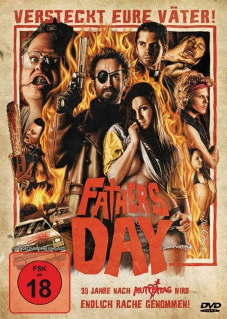

#10736 Father's Day
 
 IMDB-Wertung: 6.0 / 10
IMDB-Wertung: 6.0 / 10  Metascore: 0
Metascore: 0 
Nachdem Ahab einen Mann ermordet hat, den er für den Killer und Vergewaltiger seines Vaters hielt, muss er für viele Jahre ins Gefängnis. Doch die Vatertags-Mordserie geht weiter und auch der Vater eines jungen Mannes wird grausam zugerichtet, geschändet und lebendig verbrannt. Ein junger Priester versucht die schockierende Mordserie zu beenden und kann Ahab nach dessen Entlassung schließlich dazu überreden, ihm zu helfen. Zusammen mit dem Sohn des letzten Opfers bilden sie ein gnadenloses Trio, das nur noch ein Ziel kennt: den blutrünstigen Vatervergewaltiger endlich zur Hölle zu schicken. Doch genau dort fühlt sich der dämonische Killer ganz besonders wohl.
Jahr: 2011
Dauer: 98 Minuten
FSK: Not Rated
Land: Kanada Studio: '84 EntertainmentTonspuren: DD5.1 - ,
Untertitel: Deutsch,
Auflösung: 1080p (1920x1080) Größe: 4782 MB
Genre: Action, Horror, Komödie
Regisseur: Adam Brooks, Jeremy Gillespie, Matthew Kennedy, Steven Kostanski, Conor Sweeney
Drehbuch: Adam Brooks, Matthew Kennedy, Jeremy Gillespie, Conor Sweeney, Steven Kostanski
Soundtrack: Jeremy Gillespie, Paul Joyce
Darsteller:
- Amy Groening als Chelsea
- Garrett Hnatiuk als Walnut
 Lloyd Kaufman als God / Devil
Lloyd Kaufman als God / Devil- Mackenzie Murdock als Chris Fuchman
- Gary Johnston als Narrator
- Steven Kostanski als Masked Satanist
- Adam Brooks als Ahab
- Matthew Kennedy als Father John Sullivan
- Conor Sweeney als Twink
- Brent Neale als Detective Stegel
- Kevin Anderson als Father O'Flynn
- Meredith Sweeney als Sleazy Mary
- Zsuzsi als The Chainsaw Ripper / Angel
- Billy Sadoo als Twink's Dad
- Falcon Van Der Baek als Heaven Guide
- Kyle Young als Mark
- Murray Davidson als Artie
- Ted Kennedy als Ahab's Dad
- Wilmar Chopyk als Angry Priest
- William O'Donnell als Hallway Gimp
- Rob McLaughlin als Marty
- Michael Schmidt als Lowlife DJ
- Jeremy Gillespie als Disfigured Bill Cummings / Bounty Man
- Jason McDonald als Bill Cummings
- Kaiden Dupuis als Young Ahab
- Kaelan Wong als Young Ahab
- Dylan Gyles als Teenage Ahab
- Jynx Vandersteen als Stripper / Angel
- Andrea Felldin als Bartender / Angel
- Talya Kornachuk als Pregnant Dream Girl #2
- Braeley Hobbs als Pregnant Dream Girl #1
- Cherrie Gunn als Stripper
- Holly Halftone als Angel
- Amber Lamps als Girl in Washroom
- Sommer Spendlow als Scary Lady in Hell
- Reg Clayton als Enthusiastic Church-Goer
- Jen Kowalchuk als Girl in Bed #1 / Angel
- Hailey Riley als Girl in Bed #2 / Angel
- Screamin' Mimi als Young Chelsea
- Stephanie Kennedy als Nun #1
- Linda Hyslop als Nun #2
- James Mitchell als Lowlife Perv
- Cynthia Wolfe-Nolin als Space Princess
- McKinley Morton als Count Zadar
- Sonny Ayson als Sensei
Datei: X:\FSK18-2011\Father's Day (2011, FSKNot Rated, 1920x1080).mkv seit 22.02.2019
Festplatte: FSK18
 Es gibt insgesamt 30 Filme in der Gruppe 'FSK18-2011'
Es gibt insgesamt 30 Filme in der Gruppe 'FSK18-2011'